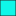
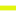

<!doctype html>
<html lang="en">
    <head>
        <meta charset="utf-8">
        <meta http-equiv="X-UA-Compatible" content="IE=edge">
        <meta name="viewport" content="initial-scale=1,user-scalable=no,maximum-scale=1,width=device-width">
        <meta name="mobile-web-app-capable" content="yes">
        <meta name="apple-mobile-web-app-capable" content="yes">
        <link rel="stylesheet" href="css/leaflet.css"><link rel="stylesheet" href="css/L.Control.Locate.min.css">
        <link rel="stylesheet" href="css/qgis2web.css"><link rel="stylesheet" href="css/fontawesome-all.min.css">
        <style>
        html, body, #map {
            width: 100%;
            height: 100%;
            padding: 0;
            margin: 0;
        }
        </style>
        <title></title>
    </head>
    <body>
        <div id="map">
        </div>
        <script src="js/qgis2web_expressions.js"></script>
        <script src="js/leaflet.js"></script><script src="js/L.Control.Locate.min.js"></script>
        <script src="js/leaflet.rotatedMarker.js"></script>
        <script src="js/leaflet.pattern.js"></script>
        <script src="js/leaflet-hash.js"></script>
        <script src="js/Autolinker.min.js"></script>
        <script src="js/rbush.min.js"></script>
        <script src="js/labelgun.min.js"></script>
        <script src="js/labels.js"></script>
        <script src="data/b_line_1.js"></script>
        <script src="data/firehydrant_2.js"></script>
        <script src="data/hydro_3.js"></script>
        <script>
        var highlightLayer;
        function highlightFeature(e) {
            highlightLayer = e.target;

            if (e.target.feature.geometry.type === 'LineString') {
              highlightLayer.setStyle({
                color: '#ffff00',
              });
            } else {
              highlightLayer.setStyle({
                fillColor: '#ffff00',
                fillOpacity: 1
              });
            }
        }
        var map = L.map('map', {
            zoomControl:true, maxZoom:22, minZoom:1
        })
        var hash = new L.Hash(map);
        map.attributionControl.setPrefix('<a href="https://github.com/tomchadwin/qgis2web" target="_blank">qgis2web</a> &middot; <a href="https://leafletjs.com" title="A JS library for interactive maps">Leaflet</a> &middot; <a href="https://qgis.org">QGIS</a>');
        var autolinker = new Autolinker({truncate: {length: 30, location: 'smart'}});
        L.control.locate({locateOptions: {maxZoom: 19}}).addTo(map);
        var bounds_group = new L.featureGroup([]);
        function setBounds() {
            if (bounds_group.getLayers().length) {
                map.fitBounds(bounds_group.getBounds());
            }
        }
        map.createPane('pane_GoogleSatellite_0');
        map.getPane('pane_GoogleSatellite_0').style.zIndex = 400;
        var layer_GoogleSatellite_0 = L.tileLayer('https://mt1.google.com/vt/lyrs=s&x={x}&y={y}&z={z}', {
            pane: 'pane_GoogleSatellite_0',
            opacity: 1.0,
            attribution: '',
            minZoom: 1,
            maxZoom: 22,
            minNativeZoom: 0,
            maxNativeZoom: 19
        });
        layer_GoogleSatellite_0;
        map.addLayer(layer_GoogleSatellite_0);
        function pop_b_line_1(feature, layer) {
            layer.on({
                mouseout: function(e) {
                    for (i in e.target._eventParents) {
                        e.target._eventParents[i].resetStyle(e.target);
                    }
                },
                mouseover: highlightFeature,
            });
            var popupContent = '<table>\
                    <tr>\
                        <th scope="row">fid</th>\
                        <td>' + (feature.properties['fid'] !== null ? autolinker.link(feature.properties['fid'].toLocaleString()) : '') + '</td>\
                    </tr>\
                    <tr>\
                        <th scope="row">OBJECTID</th>\
                        <td>' + (feature.properties['OBJECTID'] !== null ? autolinker.link(feature.properties['OBJECTID'].toLocaleString()) : '') + '</td>\
                    </tr>\
                    <tr>\
                        <th scope="row">PTYPE</th>\
                        <td>' + (feature.properties['PTYPE'] !== null ? autolinker.link(feature.properties['PTYPE'].toLocaleString()) : '') + '</td>\
                    </tr>\
                    <tr>\
                        <th scope="row">NAMT</th>\
                        <td>' + (feature.properties['NAMT'] !== null ? autolinker.link(feature.properties['NAMT'].toLocaleString()) : '') + '</td>\
                    </tr>\
                    <tr>\
                        <th scope="row">NAME</th>\
                        <td>' + (feature.properties['NAME'] !== null ? autolinker.link(feature.properties['NAME'].toLocaleString()) : '') + '</td>\
                    </tr>\
                    <tr>\
                        <th scope="row">Version</th>\
                        <td>' + (feature.properties['Version'] !== null ? autolinker.link(feature.properties['Version'].toLocaleString()) : '') + '</td>\
                    </tr>\
                    <tr>\
                        <th scope="row">Shape_Length</th>\
                        <td>' + (feature.properties['Shape_Length'] !== null ? autolinker.link(feature.properties['Shape_Length'].toLocaleString()) : '') + '</td>\
                    </tr>\
                    <tr>\
                        <th scope="row">Shape_Area</th>\
                        <td>' + (feature.properties['Shape_Area'] !== null ? autolinker.link(feature.properties['Shape_Area'].toLocaleString()) : '') + '</td>\
                    </tr>\
                </table>';
            layer.bindPopup(popupContent, {maxHeight: 400});
        }

        function style_b_line_1_0() {
            return {
                pane: 'pane_b_line_1',
                opacity: 1,
                color: 'rgba(226,245,13,1.0)',
                dashArray: '',
                lineCap: 'square',
                lineJoin: 'bevel',
                weight: 5.0,
                fillOpacity: 0,
                interactive: true,
            }
        }
        map.createPane('pane_b_line_1');
        map.getPane('pane_b_line_1').style.zIndex = 401;
        map.getPane('pane_b_line_1').style['mix-blend-mode'] = 'normal';
        var layer_b_line_1 = new L.geoJson(json_b_line_1, {
            attribution: '',
            interactive: true,
            dataVar: 'json_b_line_1',
            layerName: 'layer_b_line_1',
            pane: 'pane_b_line_1',
            onEachFeature: pop_b_line_1,
            style: style_b_line_1_0,
        });
        bounds_group.addLayer(layer_b_line_1);
        map.addLayer(layer_b_line_1);
        function pop_firehydrant_2(feature, layer) {
            layer.on({
                mouseout: function(e) {
                    for (i in e.target._eventParents) {
                        e.target._eventParents[i].resetStyle(e.target);
                    }
                },
                mouseover: highlightFeature,
            });
            var popupContent = '<table>\
                    <tr>\
                        <th scope="row">fid</th>\
                        <td>' + (feature.properties['fid'] !== null ? autolinker.link(feature.properties['fid'].toLocaleString()) : '') + '</td>\
                    </tr>\
                    <tr>\
                        <th scope="row">size</th>\
                        <td>' + (feature.properties['size'] !== null ? autolinker.link(feature.properties['size'].toLocaleString()) : '') + '</td>\
                    </tr>\
                    <tr>\
                        <th scope="row">Fire_Statu</th>\
                        <td>' + (feature.properties['Fire_Statu'] !== null ? autolinker.link(feature.properties['Fire_Statu'].toLocaleString()) : '') + '</td>\
                    </tr>\
                </table>';
            layer.bindPopup(popupContent, {maxHeight: 400});
        }

        function style_firehydrant_2_0() {
            return {
                pane: 'pane_firehydrant_2',
                radius: 6.000000000000002,
                opacity: 1,
                color: 'rgba(35,35,35,1.0)',
                dashArray: '',
                lineCap: 'butt',
                lineJoin: 'miter',
                weight: 1,
                fill: true,
                fillOpacity: 1,
                fillColor: 'rgba(239,38,2,1.0)',
                interactive: true,
            }
        }
        map.createPane('pane_firehydrant_2');
        map.getPane('pane_firehydrant_2').style.zIndex = 402;
        map.getPane('pane_firehydrant_2').style['mix-blend-mode'] = 'normal';
        var layer_firehydrant_2 = new L.geoJson(json_firehydrant_2, {
            attribution: '',
            interactive: true,
            dataVar: 'json_firehydrant_2',
            layerName: 'layer_firehydrant_2',
            pane: 'pane_firehydrant_2',
            onEachFeature: pop_firehydrant_2,
            pointToLayer: function (feature, latlng) {
                var context = {
                    feature: feature,
                    variables: {}
                };
                return L.circleMarker(latlng, style_firehydrant_2_0(feature));
            },
        });
        bounds_group.addLayer(layer_firehydrant_2);
        map.addLayer(layer_firehydrant_2);
        function pop_hydro_3(feature, layer) {
            layer.on({
                mouseout: function(e) {
                    for (i in e.target._eventParents) {
                        e.target._eventParents[i].resetStyle(e.target);
                    }
                },
                mouseover: highlightFeature,
            });
            var popupContent = '<table>\
                    <tr>\
                        <th scope="row">fid</th>\
                        <td>' + (feature.properties['fid'] !== null ? autolinker.link(feature.properties['fid'].toLocaleString()) : '') + '</td>\
                    </tr>\
                    <tr>\
                        <th scope="row">Id</th>\
                        <td>' + (feature.properties['Id'] !== null ? autolinker.link(feature.properties['Id'].toLocaleString()) : '') + '</td>\
                    </tr>\
                </table>';
            layer.bindPopup(popupContent, {maxHeight: 400});
        }

        function style_hydro_3_0() {
            return {
                pane: 'pane_hydro_3',
                opacity: 1,
                color: 'rgba(35,35,35,1.0)',
                dashArray: '',
                lineCap: 'butt',
                lineJoin: 'miter',
                weight: 1.0, 
                fill: true,
                fillOpacity: 1,
                fillColor: 'rgba(15,247,232,1.0)',
                interactive: true,
            }
        }
        map.createPane('pane_hydro_3');
        map.getPane('pane_hydro_3').style.zIndex = 403;
        map.getPane('pane_hydro_3').style['mix-blend-mode'] = 'normal';
        var layer_hydro_3 = new L.geoJson(json_hydro_3, {
            attribution: '',
            interactive: true,
            dataVar: 'json_hydro_3',
            layerName: 'layer_hydro_3',
            pane: 'pane_hydro_3',
            onEachFeature: pop_hydro_3,
            style: style_hydro_3_0,
        });
        bounds_group.addLayer(layer_hydro_3);
        map.addLayer(layer_hydro_3);
        var baseMaps = {};
        L.control.layers(baseMaps,{' hydro': layer_hydro_3,' firehydrant': layer_firehydrant_2,' b_line': layer_b_line_1,"Google Satellite": layer_GoogleSatellite_0,}).addTo(map);
        setBounds();
        </script>
    </body>
</html>
